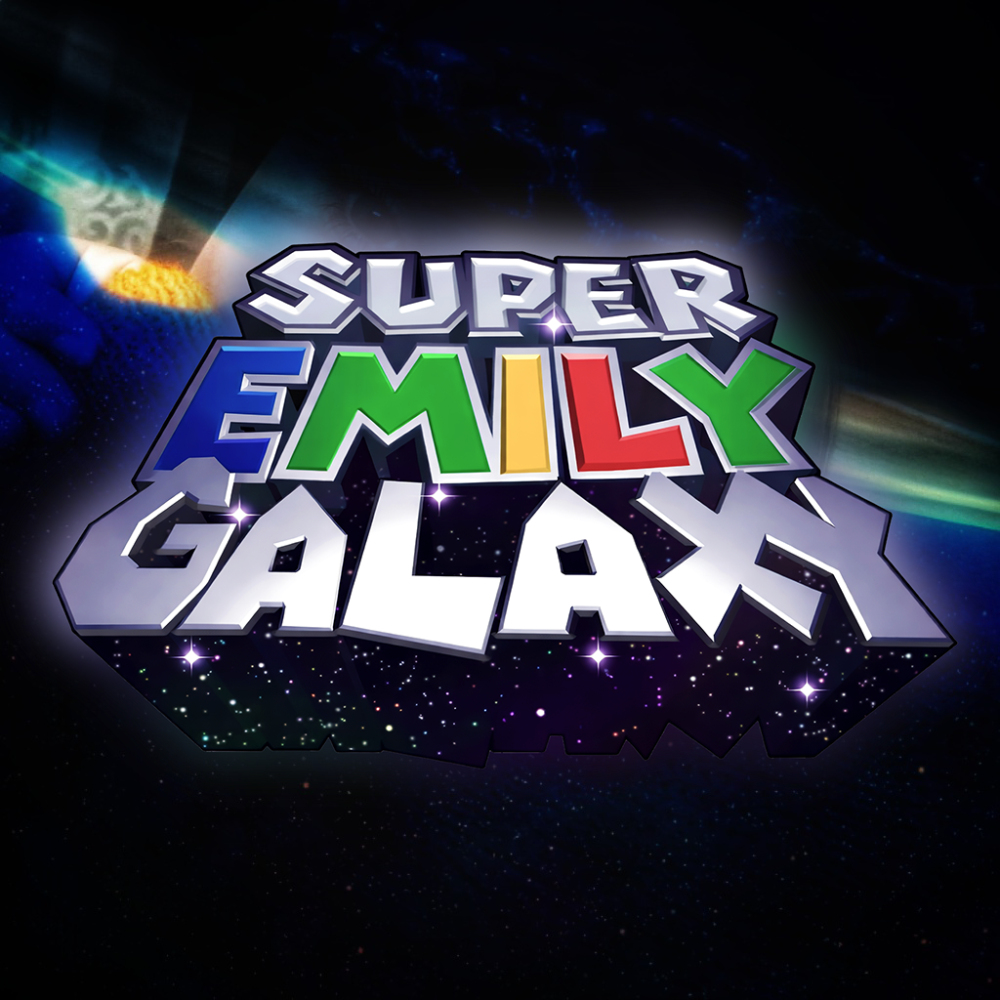
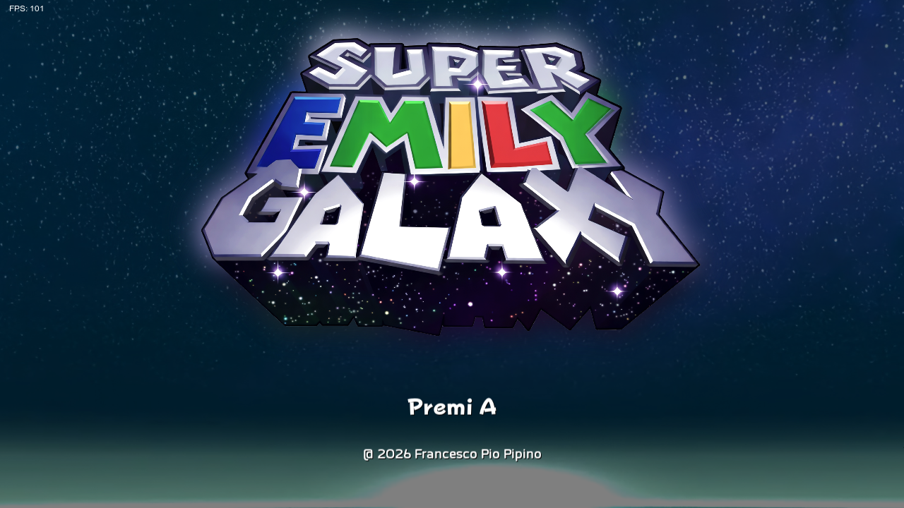
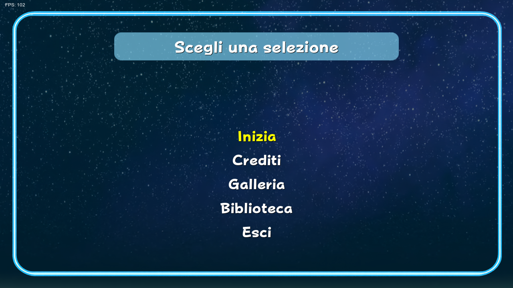
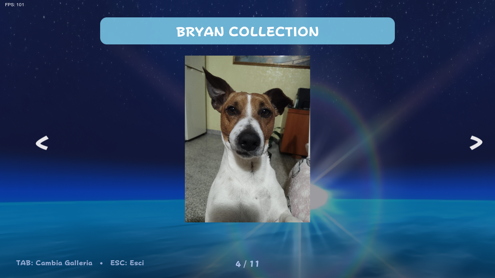
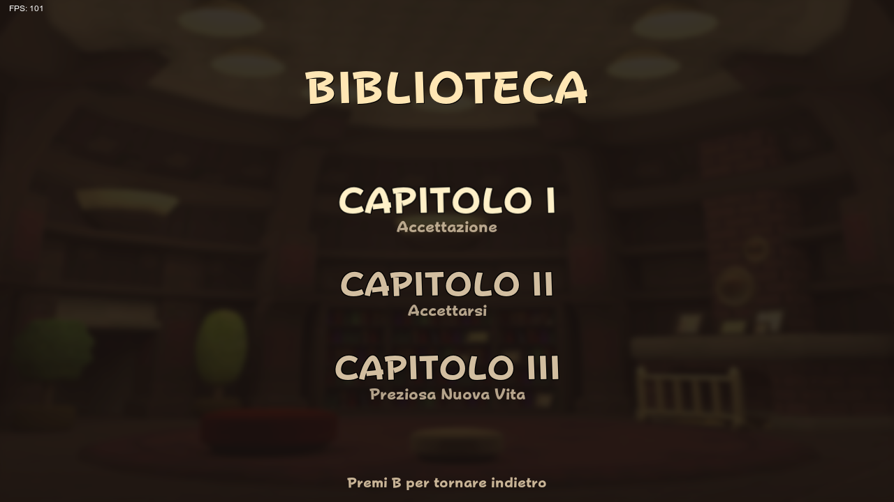

Sviluppatore
Gioco originale
Emily Tirinnanzi
Super Emily Galaxy

Roma nello spazio. Gravità che fa come je pare.
Emily stava tranquilla tra sampietrini e traffico eterno, poi l’universo decide de fa’ il fenomeno. Pianeti che girano storti, gravità che cambia idea ogni due secondi. È un platform 2D. È Roma. È nello spazio.
Screenshot di gioco
   
Genere
Platform 2D
Modalità
Giocatore Singolo
Piattaforma
PC / Android
Anno
2026
Sviluppatore
Francesco Pio Pipino